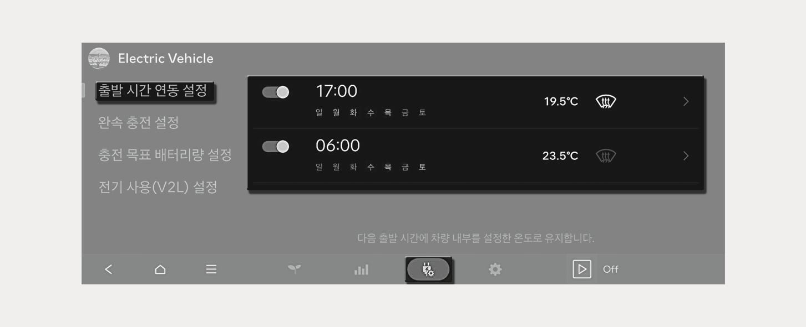
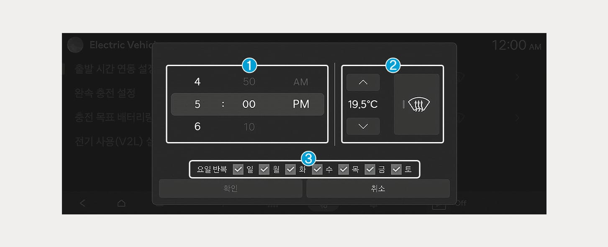

출발 시간 연동 설정하기
예상 출발 시간을 설정해 출발 시간에 맞춰 실내 온도를 조절할 수 있습니다.
-
예약 공조 기능은 출발 시간과 연계되어 작동합니다.
-
예약 공조 기능은 연결된 충전기 또는 보충전 중인 보조배터리의 전원을 직접 사용하므로, 차량의 온도를 조절해 쾌적함을 유지하고 차량 성능을 향상시킬 수 있습니다.
-
인포테인먼트 시스템 홈 화면에서 Electric Vehicle >
Ĥ (EV 충전 설정) > 출발 시간 연동 설정을 선택하십시오. -
원하는 출발 일정을 선택하십시오.

1C_NextDepartureSettings
-
예정 출발 시간(1), 희망 온도(2) 및 예약 공조 실행 요일(3)을 설정하십시오.

1C_ScheduledClimate